Prerequisites
- Simple recursion in Java
- How the recursion stack saves values
| 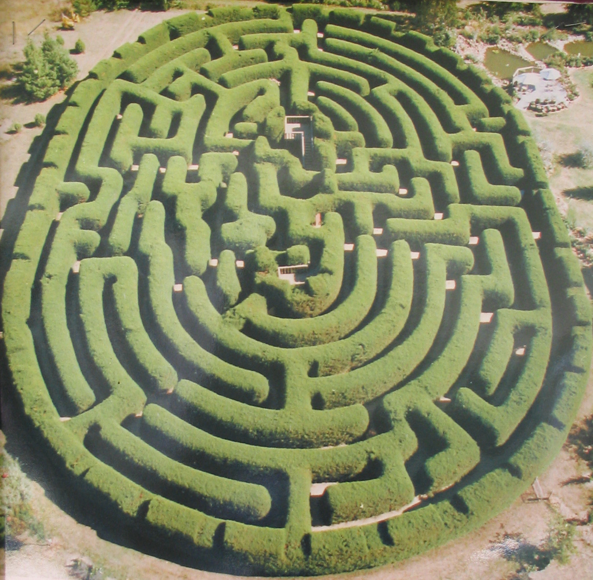 | 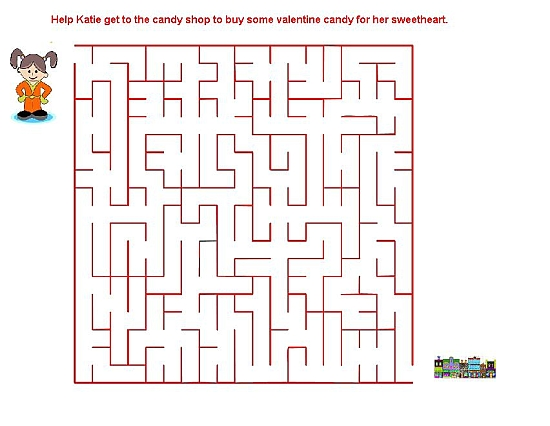 |
 | 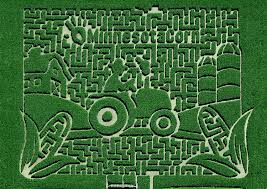 |
You're lost in a maze
- How do you find your way out?
- Right Hand rule:

Fail!!!!!
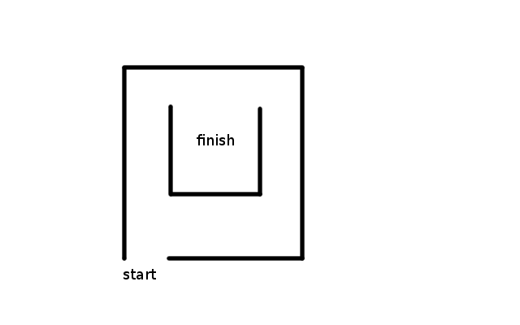Let's go to the literature
- Theseus
- 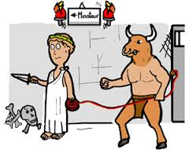
- Hansel and Gretel
- 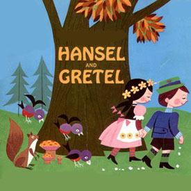
We can look at a "State" of the maze
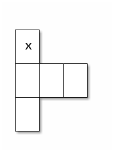Or a bunch of states
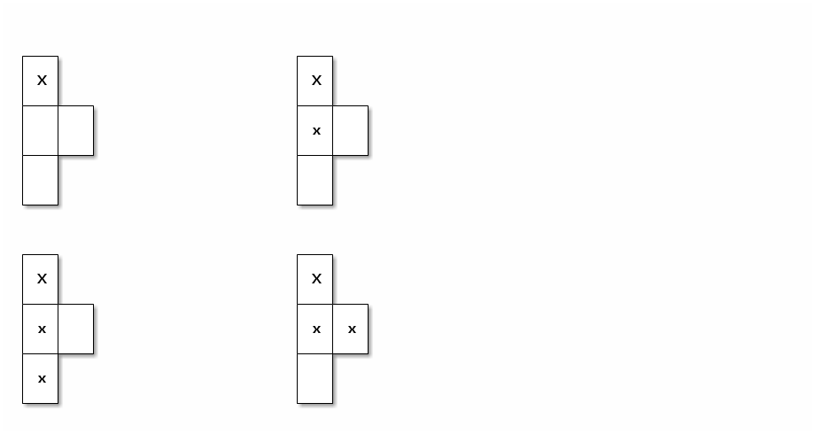And we can transition from state to state
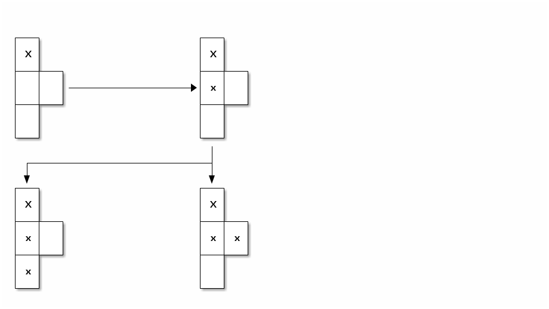What do we need?
- Take steps one at a time to get closer to our solution
- Keep track of where we've been so we can back up
- Recursion!!!!!!!!!!
- Recall factorial:
public int fact(int n){ if (n<=1) return 1; else return n * fact(n-1); }
Storing previous state:
- Factorial 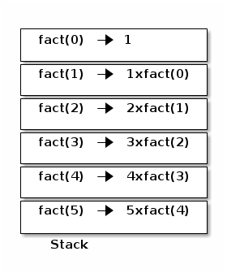
- Maze 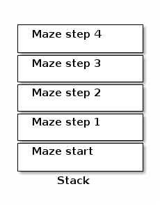
Working it out
- Base case?
- found exit?
- hit a wall?
- Move to next state?
- four possible recursive calls
- x+1, x-1, y+1, y-1
How can we represent our maze?
- 2D array
- Space = wall, # = path, z = us
################# # # # # # # # ################## # # # # # # # # # # # ####### # ########## # ### # # # # #################### # # ##### # # # # # # # # # # # # # # # # # # # # ################ ############### # ####### # ##########$y
Algorithm
- Base cases
- If we're at a wall, return
- If we're at the exit, set solved to true and return
- If we're solved, return
- Recursive reduction
- Put us (z) in the current x,y location of the 2D array
- solve from the x+1 location
- solve from the x-1 location
- solve from the y+1 location
- solve from the y-1 location
- if not solved, remove us from the board
Solver
public void solve(int x, int y){
if (board[x][y]==wall ||
board[x][y]==visited ||
solved){
return;
}
if (board[x][y]==exit){
System.out.println(this);
solved = true;
}
System.out.println(this);
board[x][y]=me;
solve(x+1,y);
solve(x-1,y);
solve(x,y+1);
solve(x,y-1);
if (!solved){
board[x][y]=visited;
}
}
Let's look at finished solver
Next steps
- Other state space search and related problems
- Heuristic Search
- Pathway to more advanced search (A*)
- implicit data structures